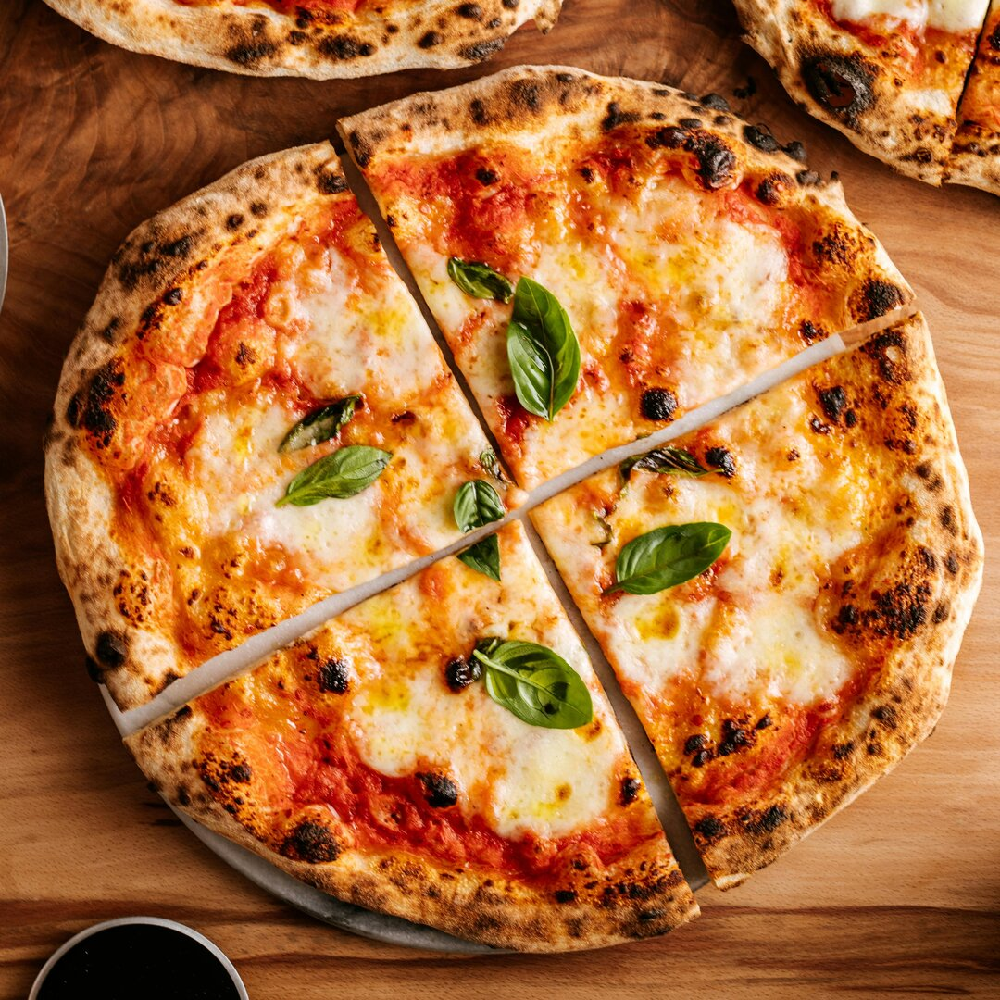

Home
Classic Margherita Pizza

Description
Margherita Pizza is the epitome of Italian simplicity and elegance. This
classic dish features a thin, crisp crust topped with a rich tomato
sauce,creamy mozzarella cheese, and fragrant fresh basil leaves. The
colors—red, white, and green—pay homage to the Italian flag, and the
combination of flavors is both vibrant and comforting.
Legend has it that the pizza was named after Queen Margherita of Savoy,
who was so enamored with the dish during a visit to Naples that it was
christened in her honor
Today, Margherita Pizza is loved worldwide for its balance of fresh
ingredients and straightforward preparation, making it a favorite for both
weeknight dinners and special occasions.
Ingredients
- 1 lb. pizza dough (store-bought or homemade)
- 2 Tbsp extra virgin olive oil
- 2 tsp minced garlic (about 2 cloves)
- 1 2/3 cups canned San Marzano tomatoes (crushed by hand)
- 2 pinches salt
- 8 oz. fresh mozzarella, chopped or sliced
- 1/4 cup fresh basil leaves (whole or chopped)
Steps
-
Preheat your oven to 550°F (or as high as it will go) and place a pizza
stone inside to heat for about 1 hour.
-
Heat olive oil in a pan over medium heat. Add garlic and sauté until
lightly golden.
-
Add the crushed tomatoes and salt, simmering for 15–20 minutes to make
the sauce.
-
Divide the dough into two portions and stretch each into an oval or
round shape.
-
Place the dough on a floured pizza peel. Spread about 1/2 cup of tomato
sauce over each crust.
- Sprinkle mozzarella evenly over the sauce.
-
Slide the pizza onto the hot pizza stone and bake until the crust is
golden and the cheese is melted (about 7–10 minutes).
- Remove from the oven and top with fresh basil leaves.
- Slice and serve hot!